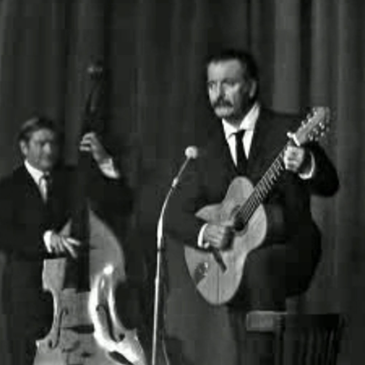

La petite marguerite
The tiny daisy flower
Georges Brassens (1955)
|
|
NOTES
|
(1) Comme pour la plupart des chansons de Brassens sur ce site, cette traduction anglaise chantable s'inspire de la traduction en quasi-prose publiée sur son blog par David Yendley (http://dbarf.blogspot.fr/2012/05/alphabetical-list-of-my-brassens-songs.html). Il en est de même de l'essentiel des présents commentaires. (cf. note 3) (2) There is a story that Brassens offered this song to Brigitte Bardot, who, it is believed, was an intimate friend. The story goes on to say that she refused because of one line. The line to which she is supposed to have objected is: Fleur, peuchère ! The word "peuchère" is an oath of southern French origin, which Collins Robert translates as "streuth!"- which makes it quite mild. Only a native speaker knows the power of an expletive and, no doubt, Brigitte Bardot found this very unladylike. This is a relatively unimportant line and Brassens could have easily rephrased it. I would have thought that what she would have found difficult to deliver, would be the last line, where he finally expresses his despair and disbelief at the behaviour of the respectable devout in the supposedly enlightened 20th century. |
(2) On raconte que Brassens offrit cette chanson à Brigitte Bardot, qui était, croit-on, une amie intime. On raconte aussi qu'elle la refusa à cause d'une ligne, celle où l'on l'on trouve l'expression "peuchère!", une exclamation qui fleure bon le midi et que le Collins Robert traduit parle mot anglais "streuth!" - ce qui en fait moins qu'un juron! Seuls les indigènes peuvent apprécier le contenu affectif d'un tel mot et il faut croire que Brigitte Bardot le jugeait fort inconvenant pour son standing. C'est un vers de peu d'importance que Brassens aurait facilement pu reformuler. Je tendrais à penser qu'il aurait posé un problème à Brigitte s'il s"était agi du vers final, celui où Brassens exprime sa déconvenue et sa perplexité face à la bien-pensance d'un vingtième siècle qu'on aurait pu croire éclairé. (3) "Chose admise par le Ciel" - "A thing admitted by God" is a hint at Moliere's Tartuffe: "Si ce n'est que le ciel qu'à mes vux on oppose,. Lever un tel obstacle est à moi peu de chose!" (4) David Yendley wrote "The music of this poem comes from the rhythm of two lines of four feet followed by one line of three feet. I have tried to keep to this, but have not always managed it." I made a point of taking up the challenge in my own translation. |
|
 Brassens chante "La petite marguerite" |